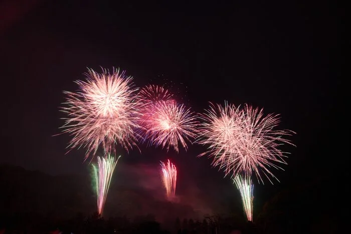
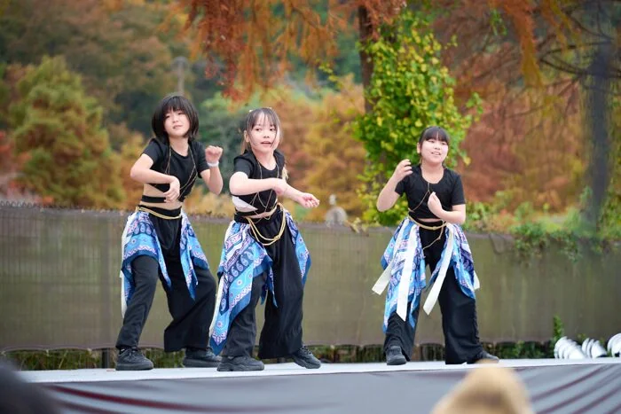

01
秋開催
澄んだ空気と紅葉の季節に楽しむ、珍しい秋の花火大会。
多くのご来場、誠にありがとうございました。次回開催の情報は、決まり次第こちらのサイトおよび公式Instagramでご案内いたします。
秋川流域花火大会は、かつて地域で親しまれていた花火大会の灯を受け継ぎ、 あきる野の秋の風情とともに育ってきた地域一体のイベントです。
観覧席、協賛、周辺観光、メディア情報まで、来場前から余韻まで楽しめる情報を ひとつのサイトにまとめてお届けしています。
澄んだ空気と紅葉の季節に楽しむ、珍しい秋の花火大会。

打ち上げのリズムと音楽を重ね、会場全体に一体感を生みます。

非営利の運営と協賛により、地域の魅力を次世代へつなぎます。
花火だけで終わらない、来場前から楽しめるプログラムを用意しています。 音楽演出、ステージパフォーマンス、屋台、体験ブースが一つの会場に集まります。

オープニングパートは米津玄師「IRIS OUT」（映画『チェンソーマン 劇場版』主題歌）で幕開け。 メインは映画生誕130周年企画として、世代を超えて親しまれる映画音楽を中心に構成します。
地域のダンスチームによるステージパフォーマンスで、打ち上げ前の時間を盛り上げます。

おでん、イカ焼き、オムそば、チュロスなど、秋の夜長にあわせたグルメが集合します。

巨大遊具「青春号ふわふわドーム」やボルダリング体験など、ファミリーで楽しめる体験コーナー。
地域に根ざした取り組みを身近に感じられる、消防団による体験ブースを設置します。
来場前のお手洗いやお食事、ステージ・花火打ち上げまでの流れの目安です。
キッチンカーや屋台が順次オープン。場内で食事をご用意ください。
地域のダンス、ふわふわドーム、ボルダリング、消防団体験などお楽しみください。
音楽と花火が重なる、東京最大級の秋花火。約5,000発を打ち上げます。
会場から秋川駅までの無料シャトルバスをご用意しています。
お忘れ物のないよう、お気をつけてお帰りください。
ゆったり観覧できるSS席、指定席のA席、気軽に楽しめるフリーエリアなど、 来場スタイルに合わせたチケットを用意しています。
※ 第7回（2025年11月15日）の販売は終了しました。 次回開催のチケット情報はサイト・公式Instagramでご案内します。
1テーブル 50,000円 / 4名席
花火と音楽を正面から味わう、ゆとりある特別観覧席。カフェチェア・テーブル・テント・ストーブ付きの指定席です。
大人 5,000円 / 子ども 2,000円
家族や友人と安心して過ごせる、指定の椅子席エリア。
大人 1,000円 / 小学生以下 無料
気軽に秋の花火を楽しめる、椅子なしの自由観覧エリア。
あきる野市への寄付で
VIP席 / BBQプラン
地域支援とセットで、特別な体験プランをご用意しています。
本大会は有志による非営利の活動として運営されています。 原材料高騰などの影響を受けながらも、皆さまの寄付と協賛が開催を支えています。
前回大会は3,000人を超える来場者で賑わい、有料席は完売席種が続出しました。 積み重ねてきた一つひとつの体験が、第7回への礎となっています。
東京サマーランド第2駐車場を会場に、秋川を背にして開催されます。
本大会は全エリア有料観覧制です。安全に楽しんでいただくため、事前にご確認ください。
会場での当日券販売はございません。チケットはすべて事前購入制となりますので、各販売プラットフォームよりお買い求めください。
飲食物・アルコール類・大型のブルーシート等の持ち込みはご遠慮いただいております。会場内の屋台・キッチンカーをご利用ください。
原則、雨天決行です。ただし強風・大雨・河川増水など、安全確保が困難と判断した場合は中止となることがあります。最新情報は本サイトおよび公式SNSにてご案内いたします。
駐車場はチケットをお持ちの方のみご利用いただけます。チケットをお持ちでない方の会場周辺へのご来場はお控えください。
各種ウェブプレイガイド、ふるさと納税サイト、楽天トラベルなど、複数のプラットフォームで取り扱っています。詳細はチケットセクションをご覧ください。
本大会は、地域の企業・団体・個人の皆さまのご協賛により開催されています。心より御礼申し上げます。


※ 掲載は順不同。第7回協賛企業様の一部をご紹介しています。
協賛・取材・運営に関するご質問は、お問い合わせフォームよりお寄せください。 最新情報は公式Instagramでも発信しています。